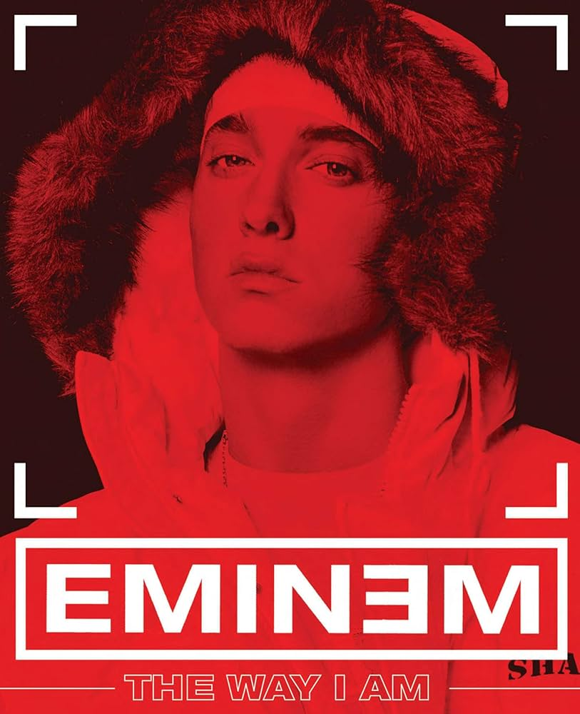
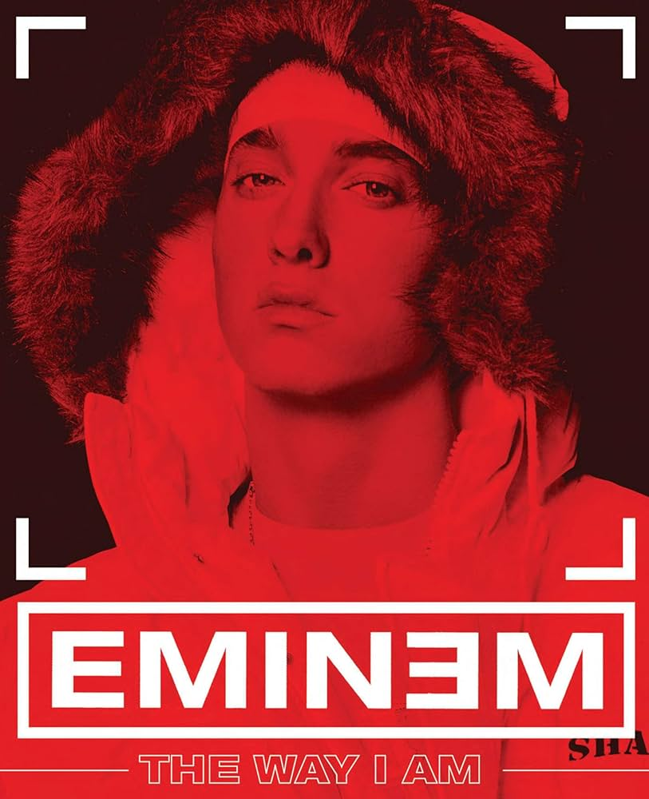

Marshall Bruce Mathers III, mais conhecido pelo seu nome artístico Eminem (St. Joseph, 17 de outubro de 1972), é um rapper, compositor, produtor musical e ator estadunidense. Adquiriu rápida popularidade em 1999 com o lançamento do disco The Slim Shady LP, o qual venceu o Grammy Award de Melhor Álbum de Rap do ano. O seu próximo trabalho, The Marshall Mathers LP, se tornou o álbum solo mais vendido na história dos Estados Unidos. Tal fato o tornou conhecido no mundo inteiro, e ajudou para a divulgação de sua gravadora, a Shady Records, e do seu grupo, o D12.
 
